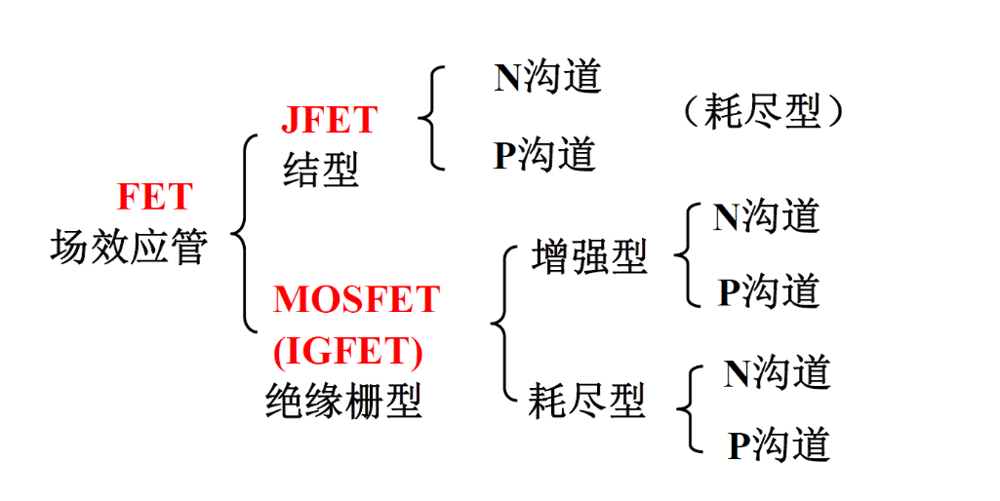
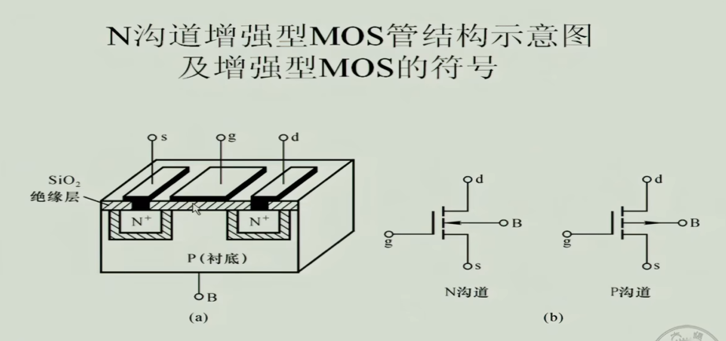
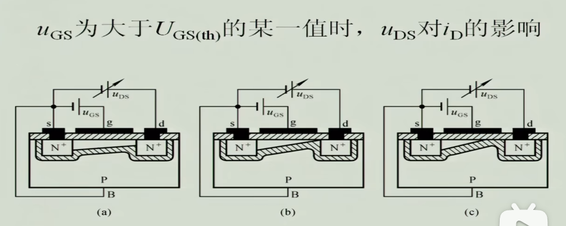

Analogue Circuit
半导体器件概论
1. 本征半导体：
半导体：介于导体和绝缘体之间的一类物质（既没有导体能导也没有绝缘体绝缘）以Si为例，因其最外层4电子能互相形成稳定的价电子结构，所以纯Si导电性能不好
本征激发：由于电子的热运动，若我们对其加上一个能量（如加热），可以使部分电子获得能量后挣脱共价键束缚形成自由电子，这个过程称为本征激发
复合：相当于本征激发的逆过程，空穴与自由电子湮灭形成价电子
在本征半导体中，随着温度的升高，载流子浓度上升，但达到一定温度后浓度基本不变，即复合与本征激发达到动态平衡。
2. 杂质半导体
-
N型半导体（掺入P）多出自由电子
-
P型半导体（掺入B）多出空穴
当温度变化时，对杂质半导体内的多子浓度影响不大，但对少子影响大，所以因为少子基数小，所以部分以少子为载流子的半导体会对温度很敏感
3. PN结
3.1 基本概念：
将P和N型半导体掺一起时，如下图
扩散运动：多子向另一边的运动，自由电子去P区，空穴去N区迅速复合，在交界区形成空间电荷区形成一个电场阻碍剩余的扩散运动，这个区域称为耗尽层或PN结(junction)
漂移运动：耗尽层相当于在两区交界处产生了相对于多子的势垒，但多子中少数能量较高的仍然能穿越势垒，但少子却能在空间电荷区加速飘过，这运动称为漂移运动，最终与多子的扩散运动平衡当两边载流子浓度不一样时称为不对称结
3.2 单向导电性：
与内电场反方向的外电场（从P到N）加上之后可以抵消内电场的作用，适当恢复扩散运动，但反向没用，从而实现单向导电但也容易想到反向电压其实是在增强少子的漂移运动的，但囿于少子的浓度，这个反向电流很小，我们称为反向饱和电流
3.3 伏安曲线
曲线为
$$
I=I_{s}(e^{\frac{U}{U_{T}}}-1)
$$
其中Is为反向饱和电流，VT为温度当量，室温下约为26mV，由于U为正时U/UT较大，所以-1可以忽略不计；当U->负无穷时，I=-IS。一般来说Si管的导通压降为0.6-0.8V，Ge管为0.2-0.3V
4. 二极管
5. 双极晶体管（BJT，Bipolar Junction Transistor）
5.1 结构
c-collector，b-basic，e-emit
发射区的掺杂浓度最高因为它要对外发射载流子；集电区的掺杂浓度小但面积大，就像一个仓库
标识符号中箭头表示PN结方向,可通过箭头方向判断是NPN型还是PNP型
6. 场效应管（FET，Field Effect Transistor）
6.1 分类
6.2 绝缘栅型场效应管（MOSFET，Metal Oxide Semiconductor Field Effect Transistor）
6.2.1 N沟道增强型MOS管（E型，enhancement）
g-gate,s-source,d-drain
可以看出g极直接接触绝缘层（SiO2），所以g极侧几乎不会产生电流
箭头相当于表示PN结方向，向内指，说明指向的是N沟道
-
加UGS时：开始时将SD之间的空穴移走，但同时也把下面区域的自由电子吸上去，形成了N沟道，沟道的大小与UGS相关，而沟道大小宏观反映为电阻，即变为电压控制的可变电阻
当UGS>开启电压Uth后，DS之间有电流流过形成了压降UDS，则会出现下图中的情况，即出现靠近d的一侧由于UDS对UGS的抵消而减小了沟道大小。而当UGS-UDS=Uth，即UDS=UGS-Uth时，右侧几乎夹断，称为预夹断状态（但不会完全夹断，否则电流为0）
之后若UDS继续增大，缝隙变长（电阻变大，抵消了UDS的作用，则电流会趋于平稳。所以称为恒流区。同时相当于此时决定ID电流的因素为UGS，显然UGS越大ID越大，所以也称这片区域为放大区
转移特性图：
$$
I_{D}=I_{DO}(\frac{U_{GS}}{U_{th}}-1)^2
$$
其中IDO是UGS=2Uth时的漏极电流输出特性图：
叫“增强型”的原因：需要UGS增强到开启电压Uth才能导通
6.2.2 N沟道耗尽型MOS管（D型，dissipative）
制作时天生让SiO2带正电，电场强到可以打开沟道。
$$
I_{D}=I_{DSS}(1-\frac{U_{GS}}{U_{p}})^2
$$
其中IDSS为饱和漏极电流，是为UGS=0时的漏极电流。UP为夹断电压
6.3 结型场效应管（JFET，Junction FIeld Effect Tasnsistor）
UGS加反向电压使得沟道变窄，大到一定程度使得沟道夹断（不是预夹断，是真断）